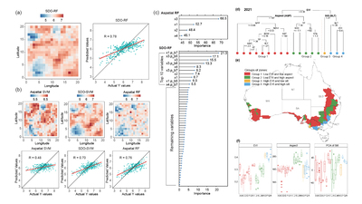
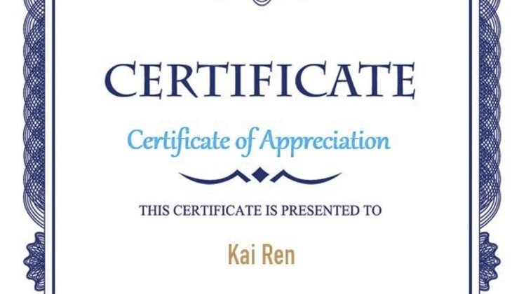
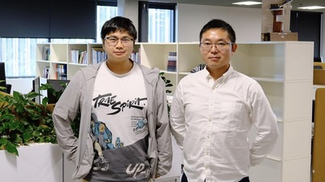
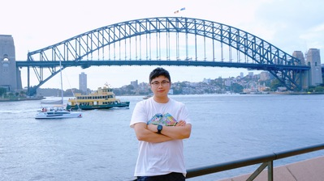
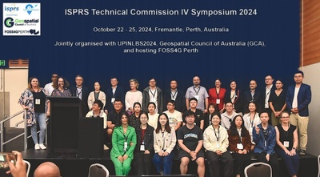
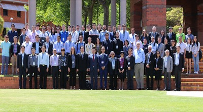
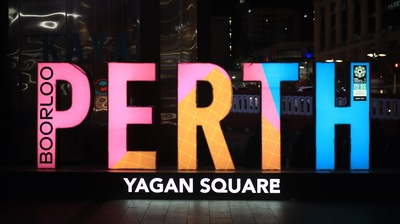
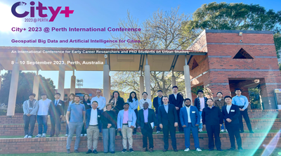
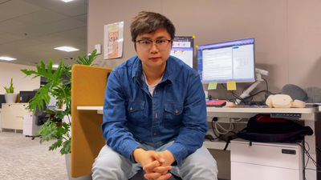

Latest
Recent Updates
2025
4 updates
Two 2025 Papers in IJGIS and GIScience & Remote Sensing
A reserved post for two 2025 papers in CAS Zone 1 Top journals: one in IJGIS in November and one in GIScience & Remote Sensing in July.
My PhD Supervisor in China: Professor Qiang Yu
A reserved post about Professor Qiang Yu, my PhD supervisor in China, and the academic guidance behind my doctoral research.
Organising IPC2025 and Presenting an Oral Report in Perth
As one of the Organising Committee members, I helped organise IPC2025, participated in the conference, and presented an oral report on wheat production disparities.
My External PhD Supervisor: Associate Professor Yongze Song
A reserved post about Associate Professor Yongze Song at Curtin University and his role as my external PhD supervisor.
2024
4 updates
Travel Fragments from Eastern Australia
A reserved post for travel fragments from Eastern Australia, including photos, routes, and short memories to be added later.
Serving at ISPRS TC IV 2024 in Perth and Meeting Geospatial Scholars
A reserved post for serving as conference staff at ISPRS TC IV 2024 in Perth from 22 to 25 October and meeting senior scholars in the geospatial community.
IPC2024 at Curtin University
The 10th International Conference on Innovative Production and Construction, held on Jul 11-12, 2024 at Curtin University.
Study and Daily Life Fragments from Western Australia
A reserved post for small fragments from study, routines, landscapes, and daily life in Western Australia.
2023
2 updates
City+@Perth 2023: Geospatial Big Data and AI for Cities
A reserved post for the City+@Perth conference on geospatial big data and artificial intelligence for cities, including my report on wheat yield heterogeneity in Western Australia.
Academic Visit to Curtin University under Associate Professor Yongze Song
A reserved post for the academic visit to Curtin University under the supervision of Associate Professor Yongze Song.